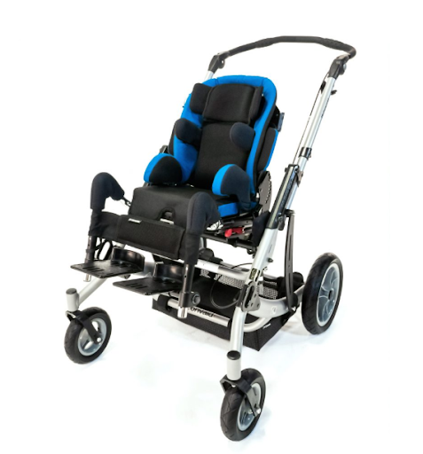
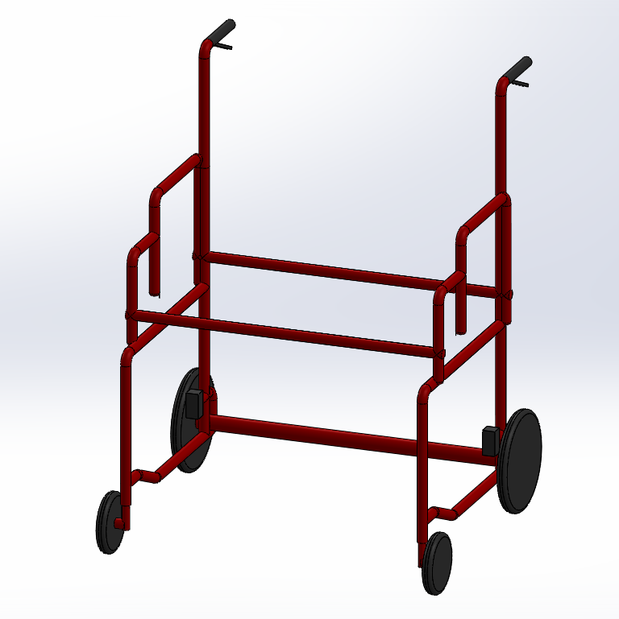
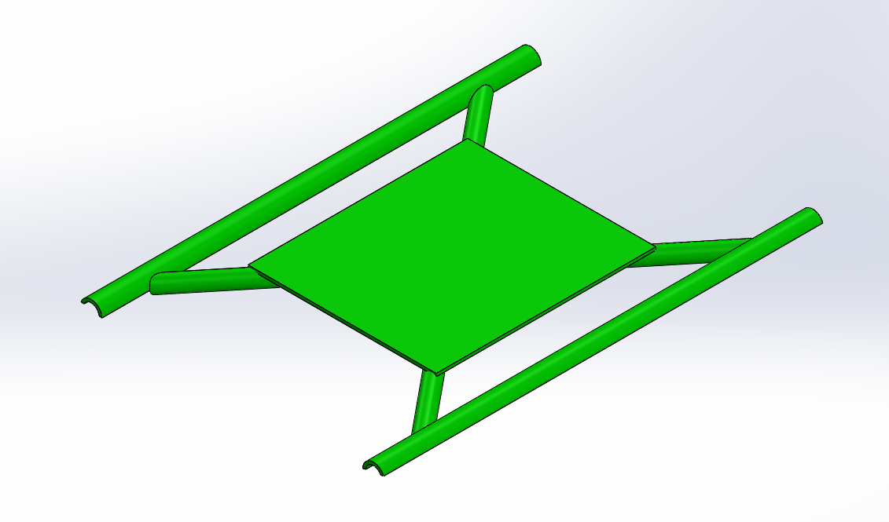
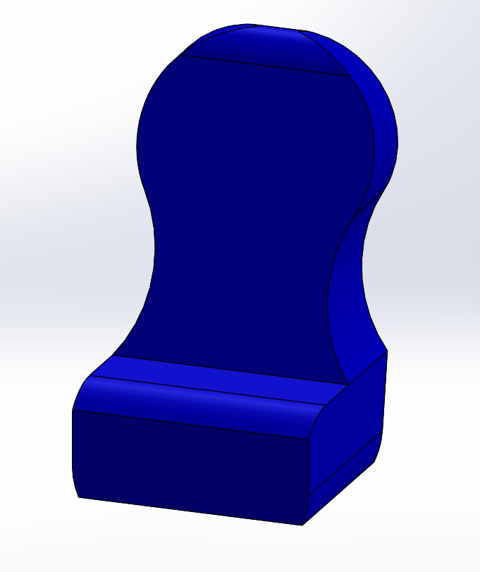
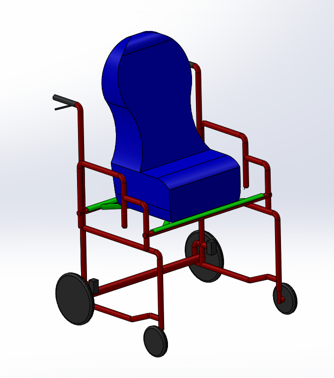
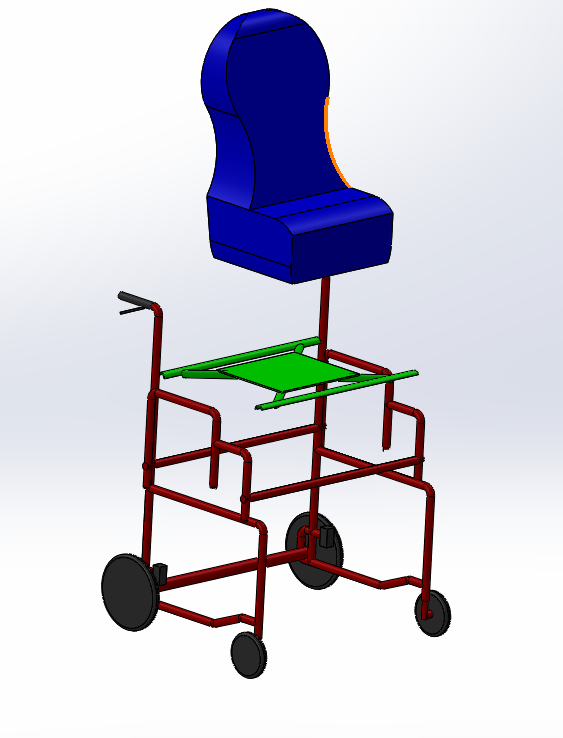

Wheel Chair redesign
Contents |
Abstract
The day care currently has one wheelchair but it is set to accommodate for one child's size. We are to design another wheelchair with similar adjustable capabilities and better terrain mobility.
Team members
From Left to Right: Tavin Kilpatrick, Cole Huner, Ryan Kinnaley, Jonathan Michael
Problem Statement/overview of the need
In order to move a kid from the inside to the playground area, they must be wheeled out the front door through the parking lot and then into the playground. The daycare needs a new wheelchair that is able to traverse the terrain better, while still keeping it the same size and with the same adjustability.
Design Specifications
1. Must be safe for the child at all times. Safety is by far the most important thing in our design due to the children's inability to use their arms or legs.
2. Must be able to fit through a 36 inch wide by 80 inch tall doorway. The doors leading outside are wider, but we would like for the chair to be able to fit through all the inside doorways as well.
3. Must be lightweight and allow efficient movement of the children. We want to make it as easy on the workers as possible.
4. Must be cost-effective, especially given how expensive specialized wheelchairs typically are.
5. Must accommodate children of 18-36 months. This means that it needs to support children up to 50lbs and 45 inches in height.
6. Must be able to move outside.
Background research
There are products that currently are on the market, but all have very expensive prices compared to a standard wheelchair. In accordance to the design requests, the wheelchair needs to have bigger wheels so it can be easily maneuvered outside. There is also a request to have the seat adjustable in many different ways to support children up to three years old. The availability of these products is limited, and the ones that are available cannot be had for less than $4,000. As for anyone, this price point is steep. The difference between what they have and what they need is the tire size. The request was for a chair with larger wheels for outdoor maneuverability. 
This wheelchair would fit the desired design, but is very expensive.
Conceptual Design
Summarize your conceptual design process. Develop at least three concepts.
Design Concept 1
This design incorporates a child safety restraint car seat on an aluminum frame. The design has a drop down, spring-loaded stand, similar to what is on a motorcycle. The stand
will flip down with the power of a person's foot, and lift the back two tires slightly off the ground. This will keep the chair from rolling. To get it back off of the stand,
the user pulls the wheelchair backwards slightly and the spring pulls the stand back into the storage position.
Design Concept 2
This design incorporates a bigger wheel design than they previously had, but has 4 wheels that are the same size. For the braking mechanism we designed for 2 rear locking casters just like their model currently has. This locking mechanism is the easiest way to stop the wheelchair from rolling when applied.
Design Concept 3
Evaluate concepts/select candidate
| # | Safety | Ease of Build | Efficient Size | Usability | Adjustable | Total |
|---|---|---|---|---|---|---|
| Design 1 | 8 | 6 | 10 | 5 | 10 | 39 |
| Design 2 | 7 | 8 | 10 | 9 | 9 | 43 |
| Design 3 | 9 | 10 | 10 | 9 | 4 | 42 |
The third design is the best choice. The main issue is being able to adjust it but that can be easily fixed by getting a better car seat for the chair.
Detailed Design
We focused on changing three aspects of our design so that we would have varying ideas for the final product. From design to design, we changed; the frame for which the car seat would attach to, the size of the wheels in both the front and back, and the braking system combined with how the design would remain stationary.
This is the specific design for our seat and we will be combining designs three and four when we build our frame. The CAD drawing below will use a hand breaking system connected to the smaller wheels.
Selected Design
Detailed description of selected design
Analysis
Describe three types of analysis to be performed on the design
Engineering analysis 1
Engineering analysis 2
Engineering analysis 3
For our last engineering analysis we planned on doing a stress analysis in Solidworks. Unfortunately, we couldn't access the version of Solidworks necessary to do this in the library due to COVID-19.
CAD Drawings
    
Bill of Materials
Fabrication Process
Insert pictures of fabrication process
Testing and implementation
Describe testing, delivery, how used/received by the family
Photos of Completed design
Insert pictures of the final product
Instructions for safe use
Provide a clear summary of safe use for the family. Do not use the device unless supervised by an adult that has been fully understood the safe use of this product.
Project Summary, Reflection
COVID-19 started just before we were able to begin ordering and building the chair. Due to the fact that our group is separated geographically and because all non-essential businesses closed down, we were unable to meet to finish our project.
For any group looking to take on this project in the future, we recommend that you start the design process as early as possible. If you have ideas already developed after speaking with your client over the phone, then meeting the client in person to gather more information will go a lot better. The client may even pick one of your initial designs and ask for more specific adjustments. Any way to get the client to be as specific as possible when creating a "wish list" will help move your project along more smoothly.